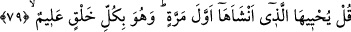

olmadığını söylemek, gerçekten çok tuhaftır.”
Şiddetli bir inkârla “Şu” üzerinde deri, et, damar ve sinir bulunmayan hayat ve
canlılıktan tamamen uzak ve iyice “çürümüş kemikleri kim diriltecek?” diyor.”
Bu söz darb-ı meselin aktarılmasından doğan soruya cevap mâhiyetindedir. Sanki ‘Ne
misal verdi?’ ya da ‘Ne dedi?’ diye sorulmuş ve bu cevap verilmiştir.
Bu âyet-i kerîmenin zâhirini esas alarak bazı kimseler kemiğin de bir hayatı olduğunu
kabul etmiş ve ölünün kemiğinin pis olduğu hükmünü bunun üzerine binâ etmiştir. Bu
görüşte olanlar İmam Şâfiî, Mâlik ve Ahmed b. Hanbel’dir. Hanefîler ise saçlar gibi
kemiklerin de pis olmadığı görüşündedir. Onlar kemiklerin diriltilmesiyle, canlı ve
hisseden kimsenin bedeninde daha önce olduğu gibi kemiklerin taze ve rutubetli hale
çevrilmesinin kasdedildiğini söylerler.
İnsanın öldüğü zaman pis olup olmadığı konusunda ihtilaf ettiler. Ebû Hanîfe insanın
bedeninde kan olduğu için necis olacağını, ancak insana verilen değerden dolayı
yıkamakla temiz olacağını söylemiştir. Camide cenaze namazı kılınması ise mekruhtur.
İmam Şafiî ve Ahmed b. Hanbel insanın ölmekle pis olmayacağını ve camide cenaze
namazının kılınmasının da mekruh olmadığını söylemişlerdir. İmam Mâlik’ten farklı
nakiller olmakla birlikte daha âşikâr olan, ona göre ölen kimsenin temiz olduğudur.
Mâlikî mezhebinde meşhur olan görüşe göre de camide cenaze namazı kılınması Ebû
Hanife’nin görüşü gibi mekruh olmasıdır.
79. De ki: Onları ilk defa yaratmış olan diriltecek. Çünkü O, her türlü yaratmayı
gayet iyi bilir.
Ey Muhammed! İşin hakîkatine delalet eden, onun unuttuğu kendi yaratılışını
hatırlatarak bu münkir insanı susturmak ve kendi yaratılışını örnek vermek yoluyla onu
irşâd etmek için “De ki: Onları” o çürümüş kemikleri “ilk defa” hiç yokken “yaratmış
olan diriltecek.” Çünkü Allah Teâlâ’nın kudreti hep olduğu gibidir. Onda bir değişme
olması imkânsızdır. Madde de zatına lazım olan kabiliyet konusunda bulunduğu hal
üzeredir.
Bu âyet ilk yaratmayı tekrar yaratmaya delil getirerek cesedlerin haşrolunacağını ifâde
eden kesin naslardandır. Yine bu âyette bu hususu kabul etmeyenler red ve tekzîb
edilmektedir.
“Çünkü O,” yaratan Allah “her türlü yaratmayı gayet iyi bilir.” Yaratma, var etme,
ilk defa yaratma (inşâ) ve tekrar ikinci defa yaratmanın (iâde) keyfiyetlerini tafsîlâtı ile
çok iyi bilir. Her şahsın çürümüş ve dağılmış olan bütün cüzlerinin usûlünü, fürûunu ve
birbirlerine göre bitişme, ayrılma, toplanma, dağılma gibi durumlarını ihâta eder/tüm
yönleriyle bilir. Bunların hepsini önceki kuvvetleriyle birlikte evvelki hal/biçim üzere